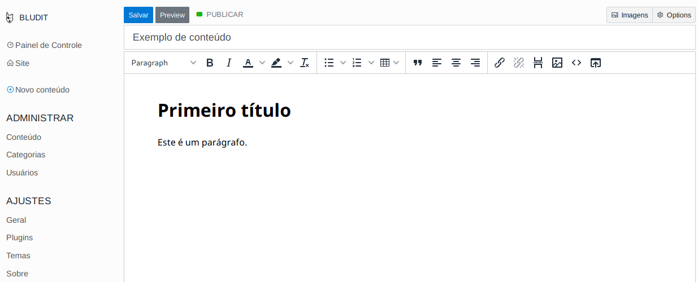

Bludit CMS em Língua Portuguesa
Sobre
Este site visa servir de base de documentação e repositório em lingua portuguesa para o Bludit CMS. Será disponibilizado customizações dos plugins, indicação e categorização dos mesmos, além de informações sobre temas. Resumindo: reune o melhor de tudo encontrado na web sobre o CMS.
Motivação
Troca de serviços comuns como Blogger (defasado) e Wordpress (muito complicado) por um sistema mais fácil de gerenciar e altamente customizável, além de prover melhor segurança por não possuir banco de dados e possuir uma comunidade pequena.
Utilizando conceitos de midias alternativas (indie web) que tem por objetivo descentralizar os dados de grandes corporações para focar na pessoa no qual os dados produzidos por ela são dela e não de empresas, o Bludit CMS se torna uma ferramenta poderosa para criação de conteúdo próprio, seguro, mais controlado e com mais privacidade.
O que é Bludit CMS?
Bludit é um sistema para criação de site e blogs contendo vários plugins e temas, além de suporte multilinguas. Ele se destaca por não necessitar de um banco de dados tradicional, isto é, os dados são disponibilizados em arquivos TXT e JSON.
O CMS é ideal para sites e blogs pequenos e médios e foi concebido otimizado para os mecanismos de pesquisa e redes sociais.
Suporta Markdown e HTML, além disso possui editor Markdown e WYSIWYG.
Outra característica é que o site pode ser administrado por múltiplos usuários (administradores, autores ou editores).
Também implementa categorias para organizar seus posts, implementa páginas estáticas e páginas destacadas, é de fácil atualização e geração de backup, e é um software de código aberto desenvolvido sob a licença MIT.
Por que da escolha?
CMS (gerenciamento de conteúdo) bom, com possibilidade de expansão, e altamente customizável. O usuário pode baixá-lo, instalá-lo e depois personalizá-lo, necessitando apenas de um tempo para aprender como funciona . Esse projeto irá ajudá-lo a entender o funcionamento.